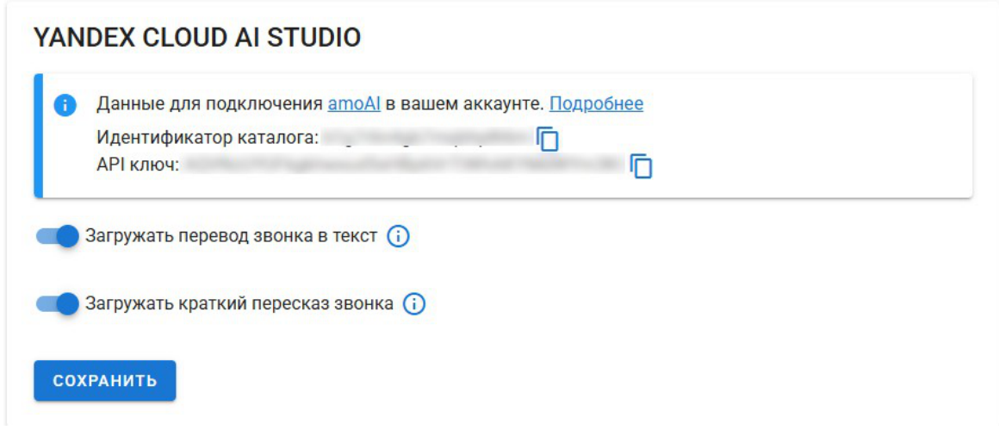
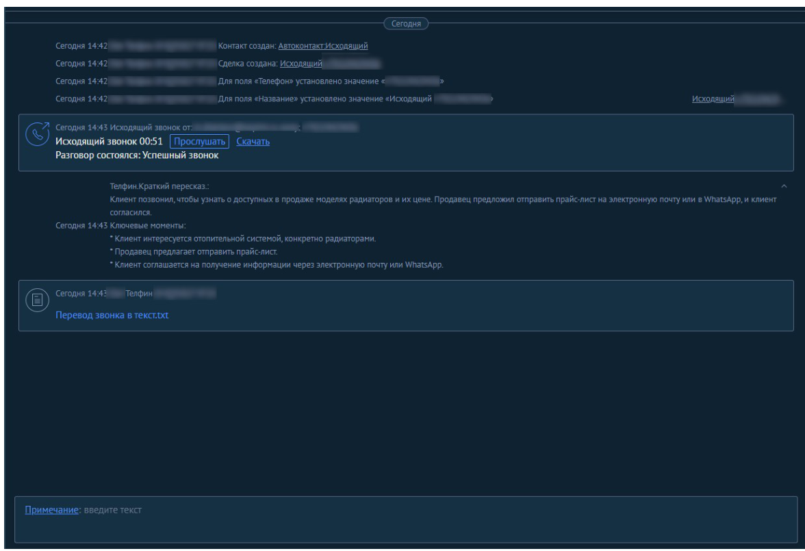

Транскрибация всех звонков отдела продаж обходится в ≈180 ₽ в месяц. Экономить тут нечего — задача не в цене, а в формате. Нужный формат даёт тумблер в уже подключённой интеграции Телфина, а под свой шаблон «Итог / Договорённости / Следующий шаг» хватает небольшого воркера на нашем сервере.
За 11.08–11.09 распознано 76 звонков на 270,7 минуты. По тарифу SpeechKit это 176–182 ₽. Даже самый дешёвый легальный российский движок (T-Bank VoiceKit) сэкономит около 70 ₽ в месяц — внедрение за 50 000 ₽ окупится через 60 лет. Менять поставщика распознавания имеет смысл только при объёмах от 5 000 минут в месяц; сейчас объём в 20 раз меньше.
amo-call-summary на сервере neoved: ≈10 часов, ≈4–22 ₽ в месяцСлушает вебхук о появлении TXT, забирает готовую расшифровку (за неё уже заплачено), гонит через DeepSeek или YandexGPT Lite по нашему шаблону и пишет примечание в сделку. Бонус: дата из «следующего шага» превращается в задачу менеджеру в amoCRM. Транскрибацию Телфина и TXT не трогаем.Никакого своего пайплайна в Яндекс Облаке у компании нет. Расшифровку делает штатная функция интеграции «Телфин.Офис ↔ amoCRM», а Yandex Cloud AI Studio подключён через агентское поручение Телфину.
source: "TELPHIN" и прямой ссылкой на запись в storage.telphin.ru — файл скачивается без авторизации.created_by: 0), во всех 80 случаях. Это поведение встроенной функции, а не отдельного сервиса.files — скачать TXT через Drive API сейчас нельзя. Для воркера из шага 3 понадобится интеграция с этим правом.Считаю по примечаниям о звонках в amoCRM (дедупликация по идентификатору звонка Телфина). Минуты — только отвеченные звонки, пропущенные имеют длительность 0 и ничего не стоят.
| Период | Звонков | Вход. / исход. | Отвечено | Минут | Средний, мин | Стоит транскрибироватьотвеченные ≥ 30 с | Транскрибация0,65 ₽/мин |
|---|---|---|---|---|---|---|---|
| 11.06 – 10.07.2026 | 55 | 23 / 32 | 38 | 73,9 | 1,94 | 26 зв. · 71,3 мин | 48 ₽ |
| 11.07 – 10.08.2026 | 71 | 30 / 41 | 49 | 116,1 | 2,37 | 29 зв. · 113,1 мин | 76 ₽ |
| 11.08 – 11.09.2026запрошенный период | 101 | 40 / 61 | 81 | 271,1 | 3,35 | 64 зв. · 267,8 мин | 176 ₽факт: 76 TXT, 270,7 мин |
| 3 месяца, среднее | 76 | 31 / 45 | 56 | 154 | 2,74 | 40 зв. · 151 мин | 100 ₽ |
| 12 месяцев, среднее11.09.2025 – 11.09.2026 | 200 | 20 / 180 | 107 | 202 | 1,89 | 76 зв. · 195 мин | 131 ₽ |
| Май 2026, пик обзвона | 904 | 44 / 860 | 361 | 633 | 1,75 | 299 зв. · 617 мин | 412 ₽ |
Формула: Телфин.Офис (абонентка) + интеграция amoCRM + Yandex SpeechKit + хранение записей. Первые два слагаемых и хранение остаются в любом из вариантов ниже — компания в любом случае звонит через Телфин. Сравнивать варианты честно можно только по переменной части: распознавание + AI + инфраструктура.
Тарификация потокового распознавания — отрезками по 15 с с округлением вверх; 1 118 отрезков × 0,1626 ₽ = 181,8 ₽.
Допущение: 250 токенов расшифровки на минуту речи, 300 токенов инструкции и 250 токенов ответа на звонок. Цены: Pro 5.1 — 0,8 ₽ / 1 000 токенов вход и выход; Lite — 0,2 ₽; DeepSeek — $0,30 / $1,20 за 1 млн (пик).
На сервере neoved уже крутятся семь наших воркеров (amo-meet, amo-zoom, amo-phone, amo-mail и другие); восьмой добавляется без новых расходов.
Инструкция Телфина по интеграции с amoCRM, раздел «Автозаполнение комментариев к звонкам»: при подключённом Яндекс Облаке доступны две опции — «Загружать перевод звонка в текст» (это наш TXT) и «Загружать краткий пересказ звонка». У neoved включена только первая.


Во всех вариантах цепочка одна: Телфин → запись → распознавание → AI-итог → примечание в CRM. Отличается, кто распознаёт и где живёт логика. Цена указана за переменную часть на текущем объёме (271 мин, 76 звонков в месяц).
note_contact, Drive API (scope files), API DeepSeek или Yandex AI Studio, POST /leads/{id}/notes, POST /tasks.Переменная часть: распознавание + AI-итог + инфраструктура. Число звонков для расчётных объёмов — минуты ÷ 3,5 (средняя длина транскрибируемого звонка за период). Для варианта 1 AI посчитан по YandexGPT Pro 5.1 — верхняя оценка.
| Решение | 1 минраспознавание | 1 000 мин | 10 000 мин | AI-итог | Автокомментарий в CRM | Сложность внедрения |
|---|---|---|---|---|---|---|
| Текущее Телфин → SpeechKit → TXT | 0,65 ₽ | 650 ₽ | 6 504 ₽ | нет | файл TXT на контакте | — |
| Вариант 1 тумблер «Краткий пересказ» | 0,65 ₽ | 976 ₽ | 9 761 ₽ | формат Телфина | примечание на контакте | тумблер |
| Вариант 2 воркер поверх TXT + DeepSeek | 0,65 ₽ | 666 ₽ | 6 661 ₽ | наш шаблон | примечание в сделке + задача | ≈10 ч |
| Вариант 3 T-Bank VoiceKit + DeepSeek | 0,38 ₽ | 394 ₽ | 3 937 ₽ | наш шаблон | примечание в сделке + задача | ≈20 ч + договор |
| Вариант 4 SpeechKit async напрямую + DeepSeek | 0,61 ₽ | 622 ₽ | 6 217 ₽ | наш шаблон | примечание в сделке + задача | ≈18 ч + Yandex Cloud |
| Вариант 5 Groq Whisper + DeepSeek | 0,16 ₽ | 172 ₽ | 1 717 ₽ | наш шаблон | примечание в сделке + задача | ≈16 ч + оплата + ПДн |
| Справочно: «Войси» | 8,33 ₽ | 8 333 ₽ | 83 333 ₽ | есть | примечание в сделке | виджет |
| Объём звонков | Текущее | Вариант 1тумблер | Вариант 2воркер | Вариант 3T-Bank | Вариант 4Yandex напрямую | Вариант 5Groq |
|---|---|---|---|---|---|---|
| 1 000 мин / мес | 650 | 976 | 666 | 394 | 622 | 172 |
| 5 000 мин / мес | 3 252 | 4 881 | 3 331 | 1 969 | 3 109 | 859 |
| 10 000 мин / мес | 6 504 | 9 761 | 6 661 | 3 937 | 6 217 | 1 717 |
| Факт компании: 271 мин, 76 звонков | 176 | 264 | 180 | 107 | 168 | 46 |
| Решение | Расходы в месяц | Расходы в год | Экономия в месяц | Экономия в год | Экономия, % |
|---|---|---|---|---|---|
| Текущее решение | 176 ₽ | 2 112 ₽ | — | — | — |
| Вариант 1 · тумблер | 264 ₽ | 3 168 ₽ | −88 ₽ | −1 056 ₽ | −50% |
| Вариант 2 · воркер поверх TXT | 180 ₽ | 2 160 ₽ | −4 ₽ | −48 ₽ | −2% |
| Вариант 3 · T-Bank VoiceKit | 107 ₽ | 1 284 ₽ | +69 ₽ | +828 ₽ | 39% |
| Вариант 4 · Yandex напрямую | 168 ₽ | 2 016 ₽ | +8 ₽ | +96 ₽ | 5% |
| Вариант 5 · Groq | 46 ₽ | 552 ₽ | +130 ₽ | +1 560 ₽ | 74% |
Короткий итог — в ленту сделки, полная расшифровка остаётся файлом на контакте (её уже делает Телфин). Примечание создаётся через POST /api/v4/leads/{id}/notes типом common, задача — через POST /api/v4/tasks с датой из блока «Следующий шаг».
Клиент импортирует оборудование из Китая. Средний платёж — 50 000 USD. Сейчас использует платёжного агента, комиссия 3%. Интересует снижение комиссии и возможность оплаты в CNY.
Менеджеру позвонить клиенту 15 сентября. → задача создана
Звонок 3:47, исходящий. Полная расшифровка — файл «Перевод звонка в текст.txt» в карточке контакта.
GET /api/v4/{contacts,leads}/notes?filter[note_type]=call_in|call_out|attachment, 2 958 примечаний, дедупликация по params.uniq. Пример сделки: 37930935, контакт 51882839.